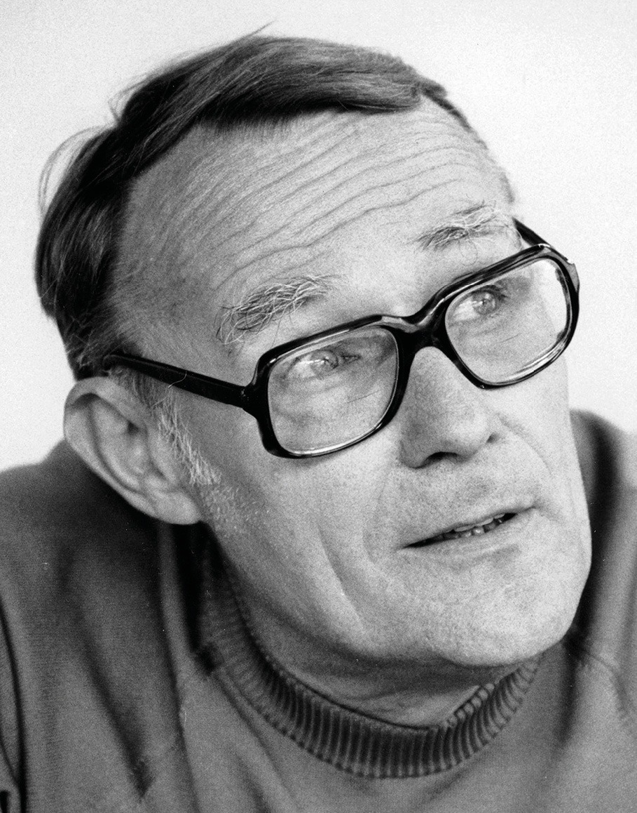
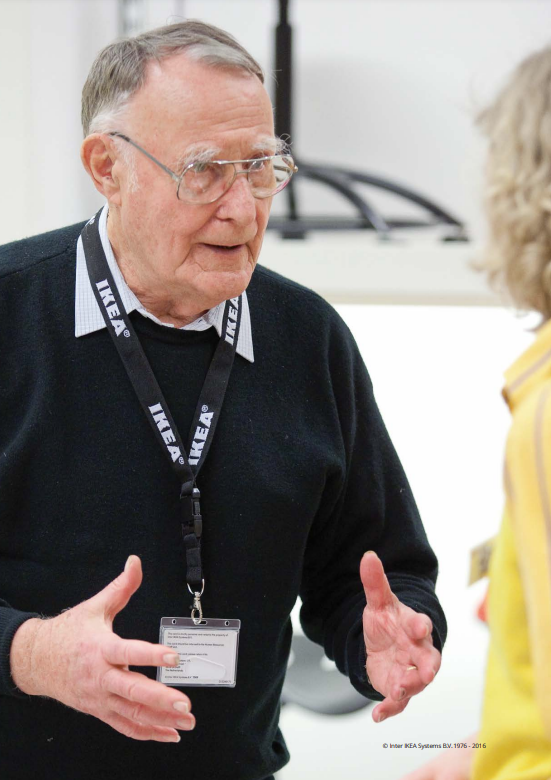

“해야 할 일은 여전히 많습니다. 밝은 미래를 위하여! ”
잉바르 캄프라드(Ingvar Kamprad)
IKEA 창립자
자신을 약간 실패했다고 생각했던 스몰란드(Småland) 지방의
모험심이 강한 농장 소년이 어떻게 세계에서 가장 성공적인 기업가
중 한 명이 될수 있었을까요?
이는 확실히 기존의 리더십과
확고한 비즈니스 원칙에 따른 것이 아니었습니다. 스몰란드 특유의
추진력 외에도 그는 매우 특별한 수준의 창의성과 독창성을 갖고
있었습니다.
잉바르 캄프라드를 만나다

The Testament of a
The Testament of a
Furniture Dealer
“해야 할 일은 여전히 많습니다. 밝은 미래를 위하여! ”
잉바르 캄프라드(Ingvar Kamprad)
IKEA 창립자
IKEA 이야기
Ingvar Kamprad는 전 세계가 기업 문화에 대해 이야기하기 오래 전에
IKEA에 대한 자신의 비전과 이념을 기록했습니다.
그는 그것을 가구상의 유언장이라고 불렀습니다. IKEA가
성공적이고 활기찬 회사로 유지되기 위해 어떤 일들을 했을까요.
-
01
Ingvar Kamprad는 가구상의 유언장 에서 제품 범위가 회사의 정체성이라고 말합니다. 그리고 제품군에는 IKEA의 단순함과 단순함이 반영되어야 합니다. 스칸디나비아에서는 전형적인 IKEA 느낌이 나고 나머지 세계에서는 전형적인 스웨덴 느낌이 나야 합니다.
-
02
Ingvar Kamprad는 명확하게 정의된 기업 문화의 힘을 굳게 믿었습니다. 그는 단순하고 솔직한 성격으로 동료들에게 종종 영감을 주었습니다. 그를 아는 사람들에 따르면, 그는 매장에서 일하는 사람들을 만나는 것을 좋아했고, 종종 그들을 껴안고, 감사하고, 농담을 했습니다.

IKEA로서 IKEA답게
가구딜러의 유언 9가지
-
다양한 제품선택의 폭을 중요시 한다.01
다양한 제품군을 생산하며 뛰어난 기능과 품질의 제품을 합리적 가격에 제공해야 한다. 기본 제품군은 고유의 스타일을 갖춰야 한다. 스킨디나비아 지역에서는 이케아 스타일, 국제적으로는 스웨덴 스타일로 인식돼야 한다.
-
강력하고 살아있는 이케아 정신(spirit)을 강조한다.02
이케아 정신은 열정, 혁신, 비용 절감, 책임감, 단순함이다. 서로를 격려하고 자극해 우리의 정신을 끊임없이 발전시켜 나간다.
-
이익을 중시 한다.03
수익 창출은 투자를 위한 전제조건이다. 혁신을 위한 자원을 구축하기 위해 경제적으로 생산하고 효율적으로 구매하라
-
생산원가를 절감하는 방법을 최우선시 한다.04
자원 낭비는 인류의 가장 나쁜 병이다. 제한된 자원으로 최상의 결과를 내는 것이 이케아식이다.
-
심플과 겸손의 가치를 중시 한다.05
단순함이 미덕이다. 관료화된 조직과 복잡한 계획은 회사를 망친다. 단순함과 겸손함으로 서로를, 협력업체를, 고객을 대해야 한다. 우리의 지위를 보여주는 어떤 상징도 필요하지 않다.
-
다른 방법으로 일처리 하라.06
다른 방식으로 일해라. 언제나 "왜" 라는 질문을 자기 자신에게 던져라. 우리는 기존의 방식을 따르기보다 새로운 길을 찾아야 한다.
-
모든 고객의 입맛을 만족시킬 수는 없기 때문에 한정된 자원을 집중한다.07
집중하라, 한 제품, 한 시장, 일의 각 단계마다 최소한의 자원으로 최대의 효과를 내기 위해서는 집중해야 한다.
-
책임을 지고, 결정을 내려라.08
결정하고 책임지는 것은 권리이자 의무다. 잠자는 자는 실수하지 않는다. 일하는 자만이 실수한다. 실수를 두려워하는 것은 조직이 관료화됐다는 뜻이다.
-
할 일이 많이 남아 있다.09
우리의 미래는 밝고, 아직 할 일이 많다. 내 사전에 불가능이란 단어는 없다. 우리는 서로에게 더 나은 동료, 더 좋은 인간이 돼야 한다.
- 좋은 예시보다 더 효과적인 방법은 없다
- IKEA는 혼자만의 노력으로 이루어지지 않습니다. 수십 년간 많은 이들이 마음과 영혼을 다해 열정과 노력을 기울여 함께 일군 결과물이죠
- 생각만 하지 마라. 성공은 철저한 실천과 현실주의에 있다.
- 좋은 리더십이라는 것이 있다면 그것은 좋은 모범을 보이는 것이다.
- 실수하는 것은 활동적인 사람의 특권이다. 자신의 잘못이 아님을 증명하는 데 시간을 보내는 것은 항상 평범한 사람들이다.
- 나는 비행기 일등석을 타고 나는 비행기 일등석을 타고 하지만 돈이 많다고 해서 돈을 낭비하는 것은 옳지 않다.
- 지금 나에게 할 일이 남아 있다는 것은 멋진 미래가 있다는 것이다.
- 재미있게 일하라. 의욕과 재미가 없다면 그 일은 지옥이다.
- 이케아는 완벽하지 않다. 이케아는 완벽하지 않다. 짜증이 나서 죽을 지경이다. 우리는 확실히 최고가 되기 위한 길을 가고 있지만 아직 거기에 있지 않다.
- 천 달러짜리 좋은 책상은 어떤 디자이너라도 만들 수 있지만, 50달러짜리 좋은 책상은 오직 최고의 디자이너만이 만들 수 있다.
- 이케아 정신은 강하고 살아있는 현실이다.
- 모든 걸 다 준비하려 진 빼지 마라. 운은 먼저 길을 나선 자를 찾아온다.
- 단순성과 상식으로 계획과 전략적 방향을 특성화해야 한다.
- 양심을 가지고 사업을 하는 것은 대가를 치르는 태도이다.
- 10분은 많은 일을 할 수 있는 시간이다. 한 번 흘러간 10분은 다시는 되돌릴 수가 없다. 당신의 삶을 10분 단위로 나누어 관리하고, 가능한 이 시간을 의미 없는 활동에 허비하지 말아야 한다.
- 자원 낭비는 이케아에서 치명적인 죄악이다.
- 최소의 수단으로 최대의 결과를 얻을 수 있도록 다른 방식을 끊임없이 고민하라.
- 너무 많이 토론한다. 그리고 그렇게 함으로써 우리는 현실과의 접촉을 잃게 된다.
- 고객들에게 좋은 것은 결국 우리에게도 좋은 것이다.
- 내가 사치를 부리면 도대체 어떻게 나를 위해 일하라고 할 것인가.
- 진정한 부자란 절약을 생활화하는 사람이다.
- 시간은 가장 중요한 자원이다. 10분 안에 많은 일을 할 수 있다. 사라진 10분은 영원히 사라진다.
- 우리 제품은 우리 자신처럼 단순하고 솔직한 사고방식을 반영해야 한다. 그것은 내구성이 있어야 하고 쉽게 살수 있어야 한다. 더 쉽고, 더 자연스럽고, 구속받지 않는 삶의 방식을 반영해야 한다.
- 모든 초점을 소비자에게 맞춰라. 그들의 욕구와 감동 코드를 발견하라.
- 결과를 극대화하려면 단순히 설교하는 것만으로는 충분하지 않다. 좋은 모범을 보여야 한다. 나는 우리 회사의 규칙을 따르는 것이 매우 자랑스럽다.
- 단순한 루틴이 더 큰 영향을 미친다. 우리가 고급 호텔을 피하는 것은 비용을 절감하는 것뿐만이 아니다. 우리는 멋진 자동차, 화려한 직함, 고급 제복, 또는 기타 어떠한 신분 상징도 필요하지 않다. 우리는 우리 자신의 힘과 의지에 의존한다.